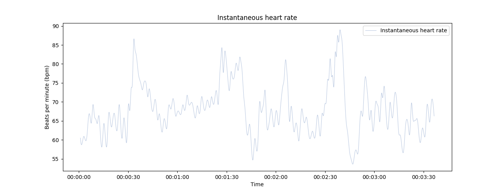

Note
Go to the end to download the full example code.
Plot instantaneous heart rate#
# Author: Nicolas Legrand <nicolas.legrand@cas.au.dk>
# Licence: GPL v3
from bokeh.io import output_notebook
from bokeh.plotting import show
from systole.plots import plot_rr
from systole import import_rr
Plot instantaneous heart rate from a RR interval time series (in milliseconds).#

<Axes: title={'center': 'Instantaneous heart rate'}, xlabel='Time', ylabel='R-R interval (ms)'>
Only show the interpolated instantaneous heart rate, add a bad segment and change the default unit to beats per minute (BPM).#
<Axes: title={'center': 'Instantaneous heart rate'}, xlabel='Time', ylabel='Beats per minute (bpm)'>
Use Bokeh as a plotting backend, only show the scatterplot and highlight artefacts in the RR intervals#
output_notebook()
show(
plot_rr(rr=rr, input_type="rr_ms", backend="bokeh", line=False, show_artefacts=True)
)
Total running time of the script: (0 minutes 0.566 seconds)